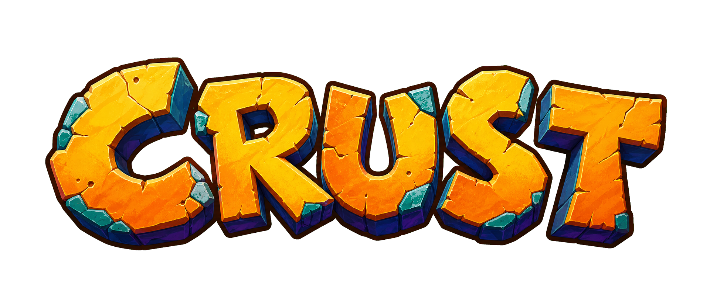
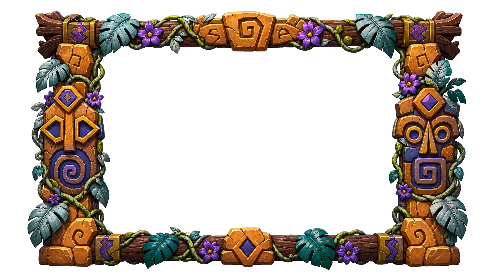

A private Rust runtime for your own game disc
Insert a local disc to begin
Start the game
Reading local disc…
0%
Disc details
- Files
- 0
- Pairs
- 0/44
- Local bytes
- 0 B
Use extracted NSD / NSF streams instead
Your disc never leaves this tab and is never saved to browser storage.
Game window

Runtime details STANDBY
- Rate
- 30.00 Hz
- Level
- —
- Audio
- LOCKED
- Memory card
- 15 SLOTS
> crust loader ready > runtime logic compiled from Rust